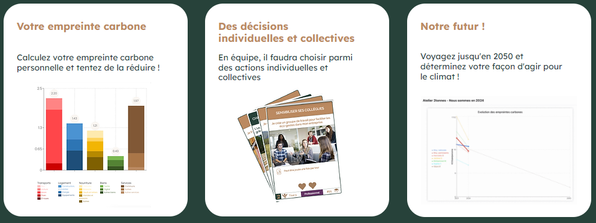

Frise du numérique responsable

Au début ma première année d'étude au BUT Informatique appliqué à l'image numérique au Puy-en-Velay, nous avons réalisé
une frise du numérique responsable
Atelier 2tonnes
 À la fin de ma première année d'étude au BUT Informatique , nous avons
participé à une activité en lien avec l'écologie.
Nous avons d'abord répondu à un questionnaire avec des questions sur nos habitudes alimentaires, sur nos équipements informatiques
ainsi que notre consommation ménagère.
Ensuite nous avons fait un jeu de rôle où nous devions nous mettre d'accord
sur des actions à mettre en place pour réduire notre
impact écologique.
Projet tutoré

En deuxième année nous devions réaliser le jeu qu'on voulait.
En bonus on pouvait rendre le jeu plus accessible et/ou avoir un jeu éco-conçu ou ayant une démarche éco-resposable.
Nous avons choisi de réaliser un jeu de braquage en réalité virtuel, Opération Vortex.
Nous avons optimisé le code et utilisé la génération procédurale. La map du jeu est générée aléatoirement et une seule fois au début de chaque partie.
Il n'y a pas de sauvegarde de map, ça permet de réduire la consommation.
Nous avons aussi modélisé la plupart des modèles 3D et nous avons opté pour le style "low poly".
Low poly signifie que les modèles ont peu de détails et sont moins gourmands.